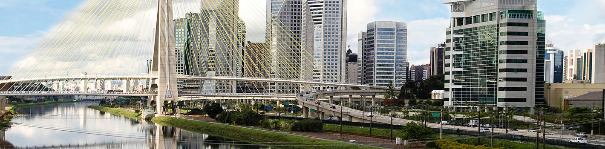

Ribbon Cutting
💎 The Diamond Shack
Join us for the Grand Opening of The Diamond Shack, Thursday at 1:00 p.m.
more info...
Weather

° F
Partly Cloudy
Wind Speed: mph
Wind Chill: ° F
News Release
Number 1 in consumer market: with 45 million inhabitants, São Paulo is the most populous and wealthy state of Brazil, concentrating the 4th largest consumer market in Latin America, behind only Brazil as a whole, Mexico and Colombia. The greatest strength of the Brazilian consumer market lies in the inland cities of the state of São Paulo.
Choose São Paulo, the right destination for your investment
https://www.en.investe.sp.gov.br/why-sao-paulo/
A new model for brain research
Join Us!
Discover how to join the chamber of commerce and how it will benefit your organization!
The goal of Sao Paulo Chamber of Commerce aims to promote trade relations between Brazilian companies, with particular emphasis on São Paulo state-based companies, and the rest of the world.
Mission:
As the SPCC foreign trade department, the São Paulo Chamber of
Commerce's main objectives are as follows:
-To facilitate and promote the access of foreign companies into the
Brazilian market
-To offer business opportunities to companies
-To empower foreign companies to operate within a competitive
market
-To build a network of international cooperation with business
entities worldwide
Vision:
Committed to becoming a national and international reference in
supporting businesses between Brazilian and foreign companies by
providing high quality products and services.
Event
The goal of Sao Paulo Chamber of Commerce aims to promote trade relations between Brazilian companies, with particular emphasis on São Paulo state-based companies, and the rest of the world.
Weather
°F
News Release
The goal of Provo Chamber of Commerce is to help to further the interests of small businesses in a local area. The activities can range from hosting events, to lobbying local representatives to charitable works for the betterment of the community. As a small business owner it is imperative that you network. The Chamber of Commerce gives you the opportunity to meet with other local business owners and network. Of course they also present business owners in a positive light to the community.
Weather
News Release
The goal of Sao Paulo Chamber of Commerce aims to promote trade relations between Brazilian companies, with particular emphasis on São Paulo state-based companies, and the rest of the world.
Spotlight1
The goal of Sao Paulo Chamber of Commerce aims to promote trade relations between Brazilian companies, with particular emphasis on São Paulo state-based companies, and the rest of the world.
Spotlight2
The goal of Sao Paulo Chamber of Commerce aims to promote trade relations between Brazilian companies, with particular emphasis on São Paulo state-based companies, and the rest of the world.
Spotlight3
The goal of Sao Paulo Chamber of Commerce aims to promote trade relations between Brazilian companies, with particular emphasis on São Paulo state-based companies, and the rest of the world.
Join
The goal of Sao Paulo Chamber of Commerce aims to promote trade relations between Brazilian companies, with particular emphasis on São Paulo state-based companies, and the rest of the world.